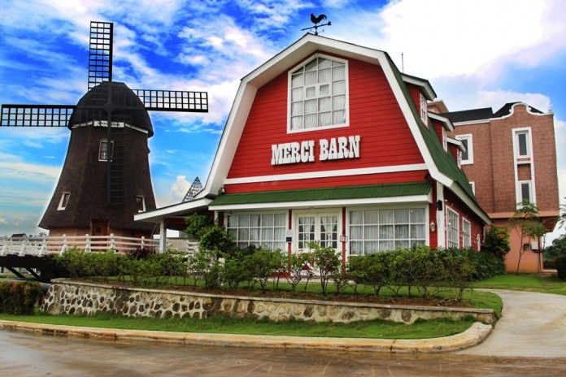
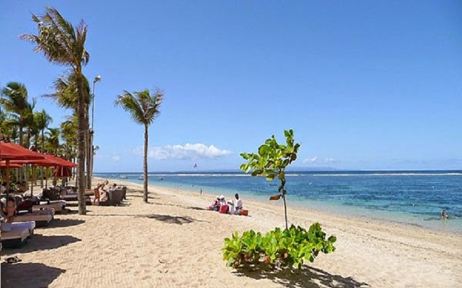
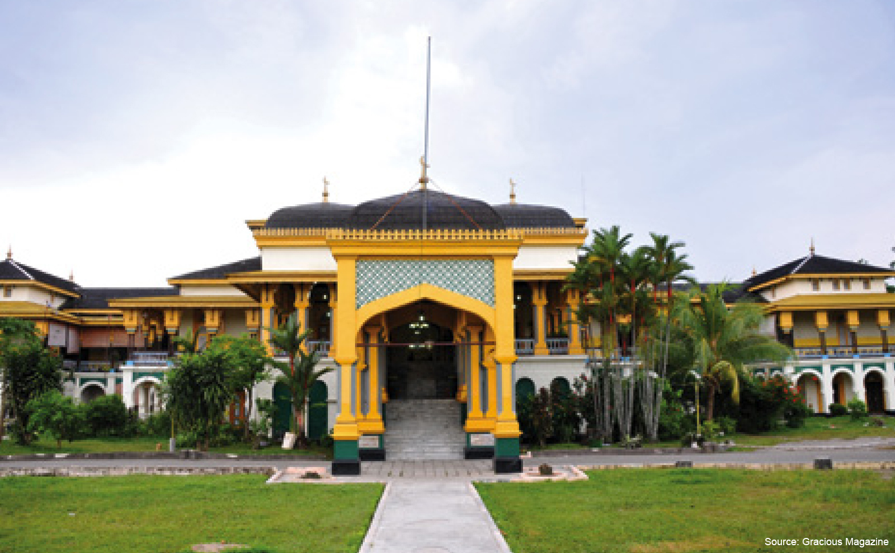
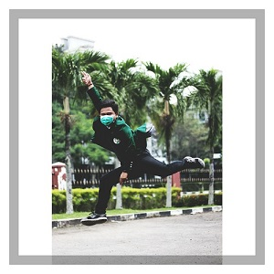
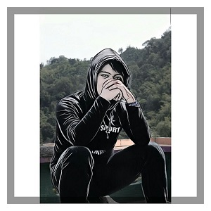
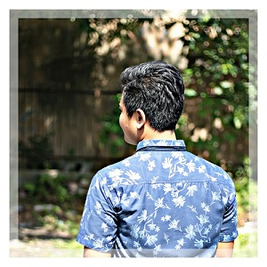

Home
About
Contact



keyboard_arrow_left
Previous
keyboard_arrow_right
Next



Profil
Nama
:
Riyandi Syahputra
TTL
:
Padangsidimpuan, 08 Februari 1997
Jenis Kelamin
:
Laki-Laki
Agama
:
Islam
G. Darah
:
B
Alamat
:
Jalan D.R Mansyur Gg Sipirok no. 2AG
Pekerjaan
:
Mahasiswa
Riwayat Pendidikan
MIN Sihadabuan
SMP-N 4 Padangsidimpuan
SMA-N 4 Padangsidimpuan
Universitas Sumatera Utara
expand_less
back to top